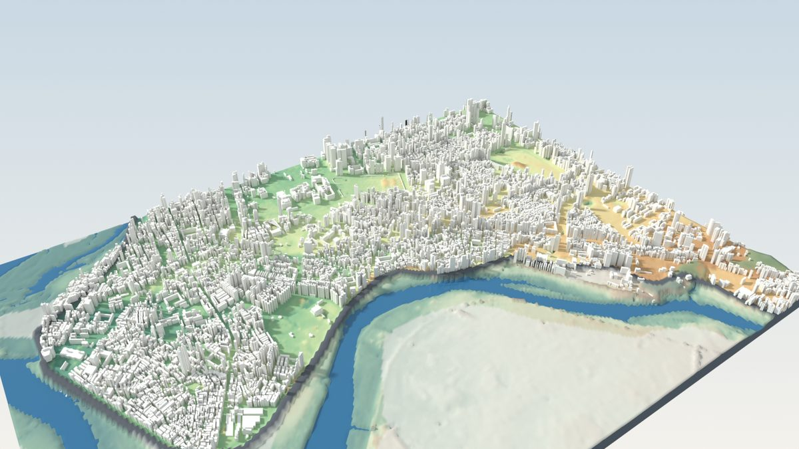
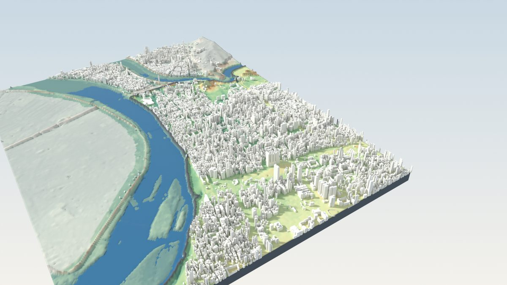
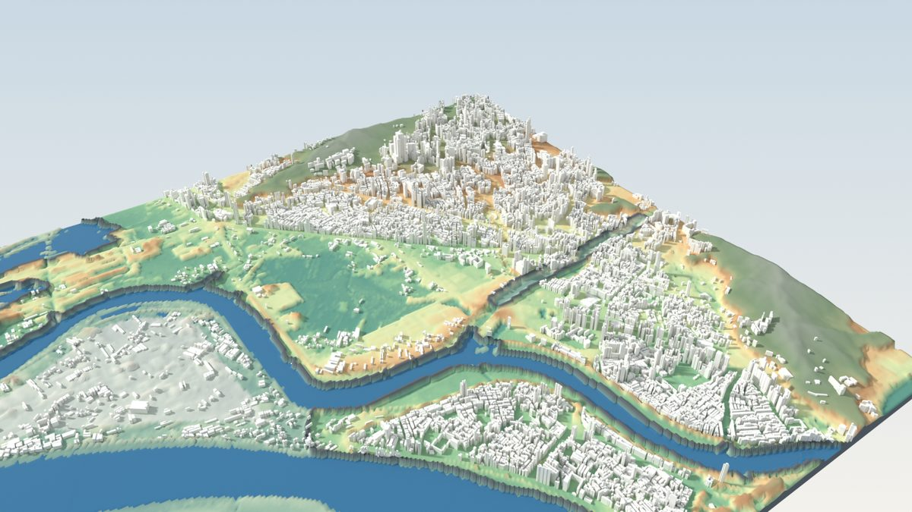
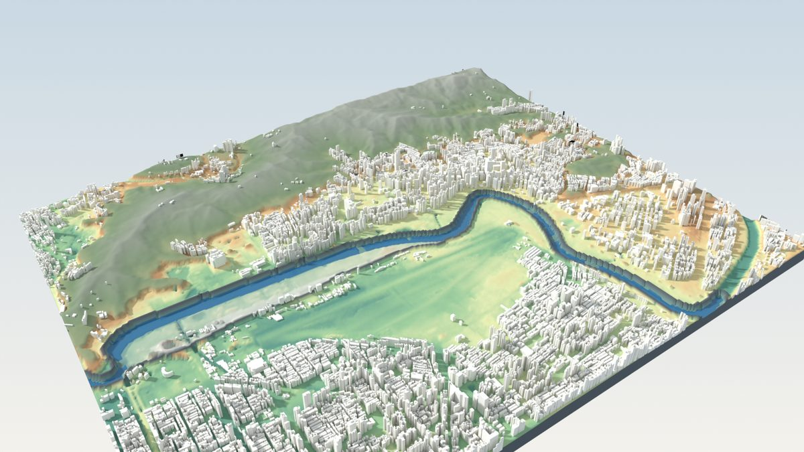
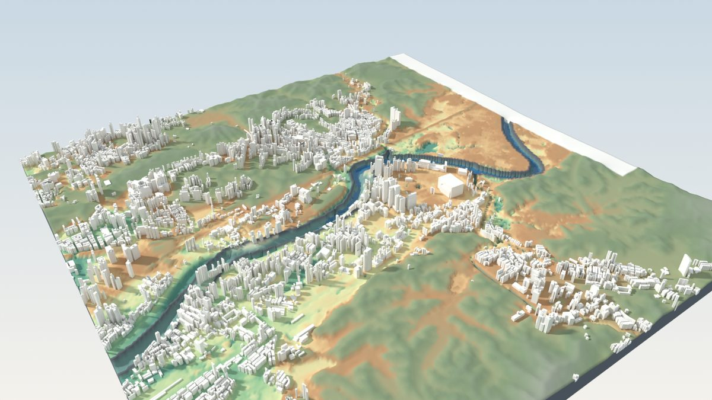
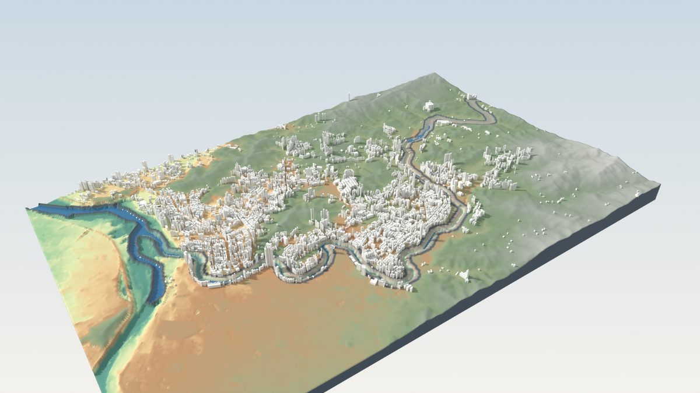
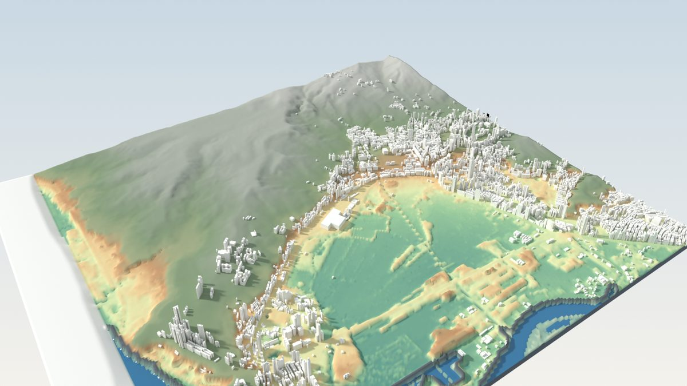

TAIPEI RIVER FLOOD SIMULATOR・7 個河段
臺北市河川淹水模擬
從新店溪出發，沿淡水河、基隆河、景美溪把臺北市主要河段都做成互動模擬：調整洪水規模、潮位、雨量與疏散門狀態，看哪座水門先被漫過、堤內哪裡會淹。每個河段另外在 GPU 上算了上百個降雨與水門失效情境，可以直接比較「多大的雨、哪座門」會淹多少。
哪個河段比較怕外水、哪個比較怕大雨？
尖峰淹水面積（8 小時內堤內水深 ≥ 0.1 m 的最大面積），GPU 情境集合結果。點河段名稱進入該頁。
關鍵水門未關・計畫洪峰 100%（新店溪 7,000 m³/s）時雨量 130 mm・1 小時
淡水河東岸是唯一水門失效比 130 mm/h 暴雨淹得多的河段；景美溪的水門底檻高於這個洪水位，水門未關也不進水，主要風險是大雨；130 mm/h 的面積模型普遍高估，絕對值請看下方說明。
七個河段
卡片數字都是尖峰淹水面積（公頃）；封面是 Blender 由同一份地形與建物資料算出的 3D 圖
新店溪（萬華・中正・大安）
萬華、中正、大安・新店溪
本專案起點：颱風預報換算、五座疏散門、示範影片
馬場町門未關161ha洪峰 7,000 m³/s・潮位 1.6 m
時雨量 130 mm253ha1 小時・排水設計值
抽水站只剩 30%350ha時雨量 100 mm・1 小時
- 洪峰 10,000 m³/s＋暴潮、水門全關：河水仍低於堤頂，不越堤
- 水利處 100 mm/h 積水圖 28 ha，本模型同情境 11 ha、位置命中 2%

淡水河東岸
萬華北、大同、中山西・淡水河、基隆河下游
堤內 11.93 km²疏散門 9抽水站 13
大稻埕門未關408ha洪峰 100%・潮位 1.6 m
時雨量 130 mm231ha1 小時・排水設計值
抽水站只剩 30%63ha時雨量 100 mm・1 小時
- 洪峰 140%＋暴潮、水門全關：越堤淹 1,186 ha
- 水利處 100 mm/h 積水圖 33 ha，本模型同情境 10 ha、位置命中 2%

基隆河下游（社子・士林）
士林、社子・基隆河下游、雙溪
堤內 20.4 km²假想缺口 6抽水站 22
延平北路六段511巷門未關154ha洪峰 100%・潮位 1.6 m
時雨量 130 mm317ha1 小時・排水設計值
抽水站只剩 30%459ha時雨量 100 mm・1 小時
- 洪峰 140%＋暴潮、水門全關：越堤淹 1,139 ha
- 水利處 100 mm/h 積水圖 26 ha，本模型同情境 19 ha、位置命中 2%

基隆河中游（中山・松山・大直）
中山、松山、大直、內湖西・基隆河中游
堤內 33.11 km²疏散門 8抽水站 22
塔悠門未關219ha洪峰 100%・潮位 1.6 m
時雨量 130 mm410ha1 小時・排水設計值
抽水站只剩 30%585ha時雨量 100 mm・1 小時
- 洪峰 140%＋暴潮、水門全關：越堤淹 1,840 ha
- 水利處 100 mm/h 積水圖 22 ha，本模型同情境 31 ha、位置命中 6%

基隆河上游（內湖・南港）
內湖、南港・基隆河上游
堤內 24.81 km²疏散門 8抽水站 14
成功門未關60ha洪峰 100%・潮位 1.6 m
時雨量 130 mm286ha1 小時・排水設計值
抽水站只剩 30%397ha時雨量 100 mm・1 小時
- 洪峰 140%＋暴潮、水門全關：越堤淹 848 ha
- 水利處 100 mm/h 積水圖 5 ha，本模型同情境 24 ha、位置命中 16%

景美溪（文山）
文山（景美、木柵）・景美溪
堤內 35.53 km²疏散門 3抽水站 11
育英門未關0ha洪峰 100%・潮位 1.6 m
時雨量 130 mm346ha1 小時・排水設計值
抽水站只剩 30%450ha時雨量 100 mm・1 小時
- 洪峰 140%＋暴潮、水門全關：越堤淹 53 ha
- 水利處 100 mm/h 積水圖 7 ha，本模型同情境 36 ha、位置命中 19%

基隆河出海段（北投・關渡）
北投、關渡、士林北・基隆河出海段、磺溪
堤內 26.87 km²假想缺口 2抽水站 5
承德路七段401巷門未關138ha洪峰 100%・潮位 1.6 m
時雨量 130 mm225ha1 小時・排水設計值
抽水站只剩 30%317ha時雨量 100 mm・1 小時
- 洪峰 140%＋暴潮、水門全關：越堤淹 237 ha
- 水利處 100 mm/h 積水圖 17 ha，本模型同情境 23 ha、位置命中 7%
- 地形：內政部 2025 年 20 m DEM；堤線沿河道邊緣自動建立，必要處依地形與 OpenStreetMap 手動補描。頁面 3D 與卡片封面的地形底圖（暈渲、環境遮蔽、建物落影）由 Blender 依同一份資料算出。
- 河道水位以「計畫洪峰流量的百分比」在常水位與計畫洪水位之間內插，屬示意，不是水理演算；超過 120% 時各河段的面積主要來自越堤，絕對值只能看相對順序。
- 疏散門位置以臺北市水利處疏散門清單（data.taipei）為準，OSM 補足；士林・社子與北投・關渡兩份資料都沒有疏散門，頁面上的「水門」是依道路穿越堤線處設定的假想缺口。
- 堤內淹水以二維局部慣性淺水波法計算，排水系統依臺北市雨水下水道（78.8 mm/hr）與抽水站設計標準；GPU 情境集合用同一套模型的 PyTorch 移植版在 Colab 批次計算，與瀏覽器結果逐格一致。
- 雨型是以 T+3 h 為中心、長度等於「降雨延時」的定強度降雨。和臺北市水利處「降雨積水模擬圖」（112 年版）比：平地河段面積量級相近、山區河段偏高，位置命中率多在兩成以下（本模型是 20 m 網格、集總式下水道、沒有排水溪流），街道尺度的積水點請看各頁面的疊圖。
- 各河段範圍邊界視為封閉，相鄰河段之間的水不互通。